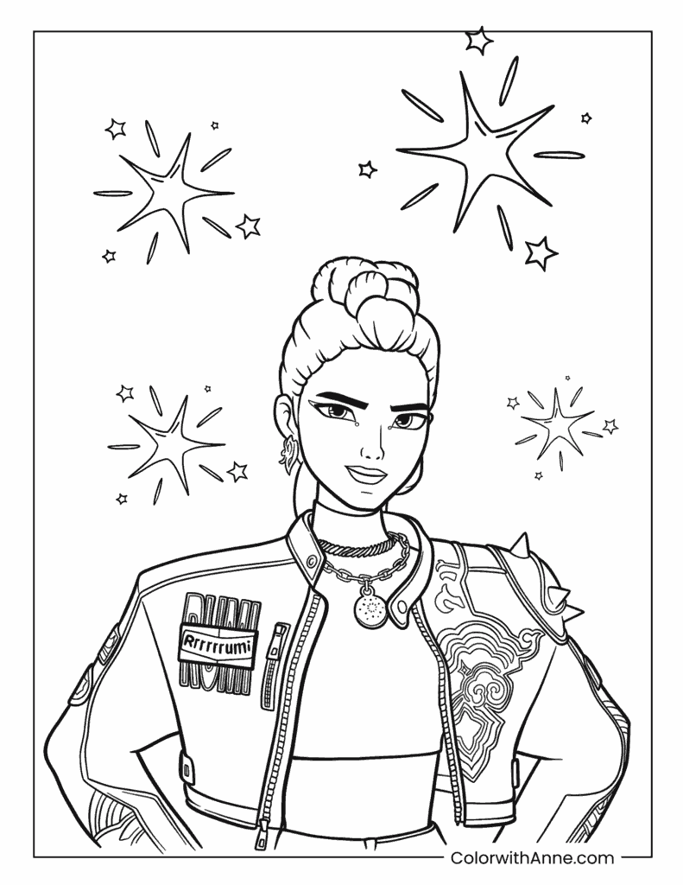
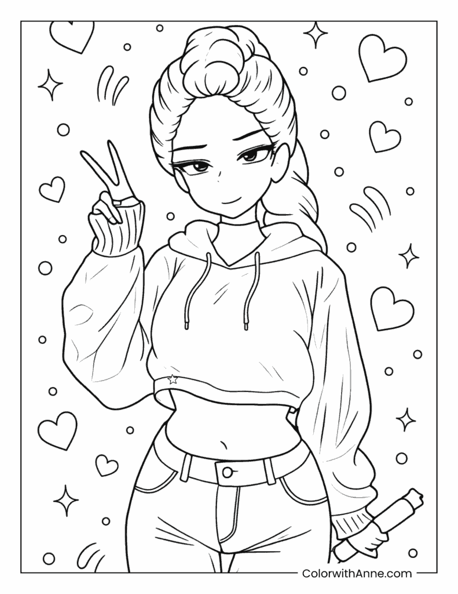
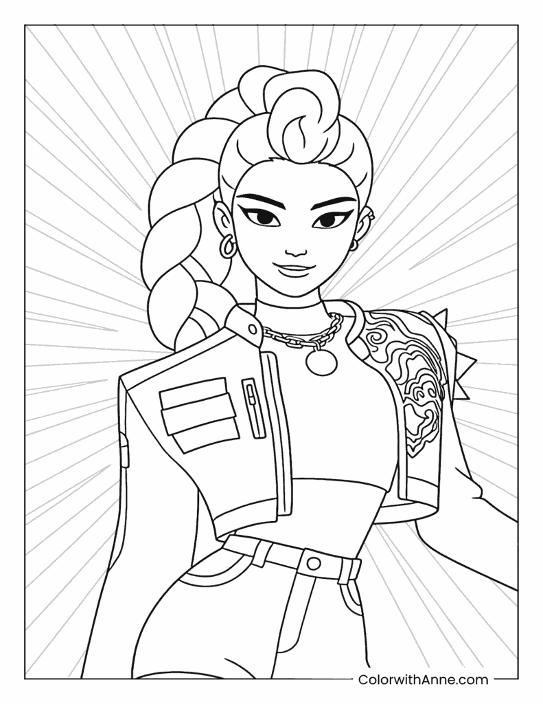
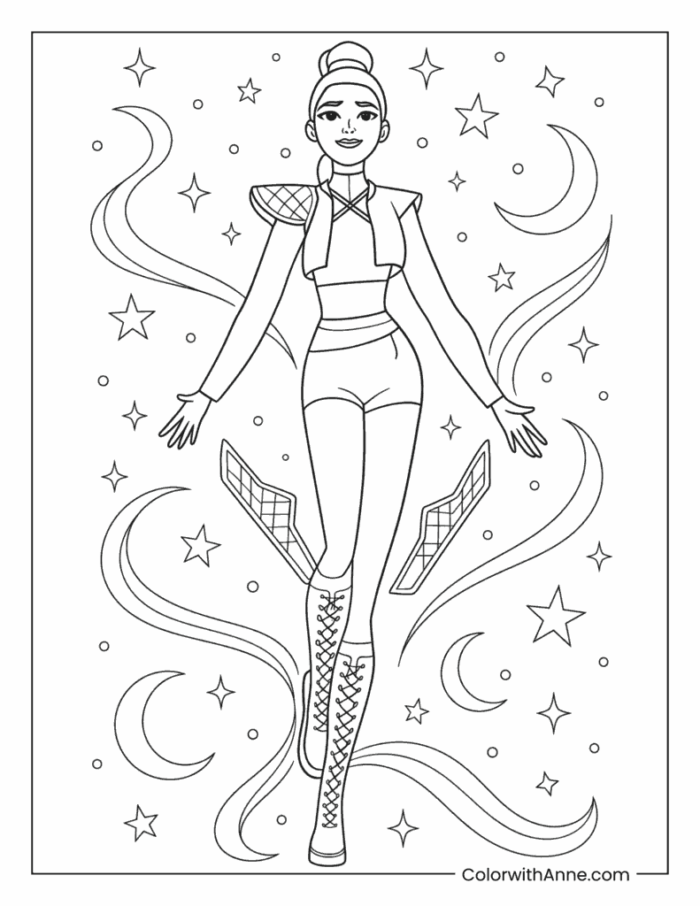
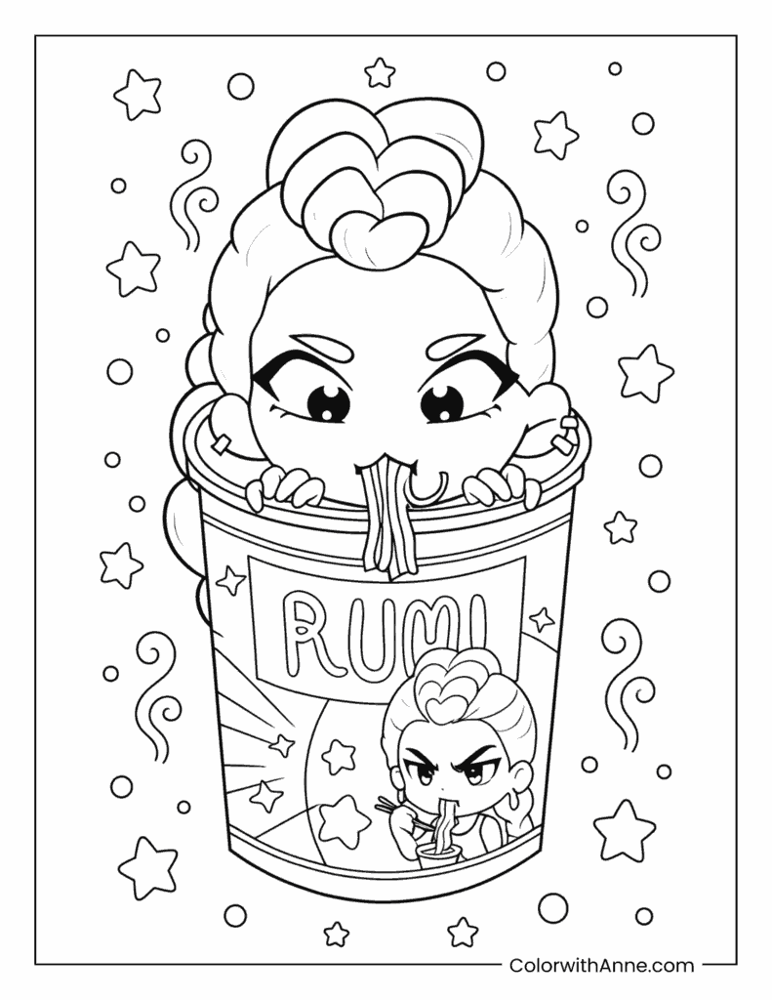
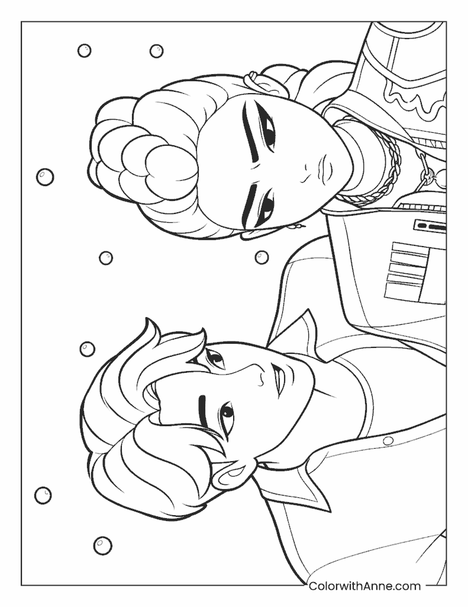
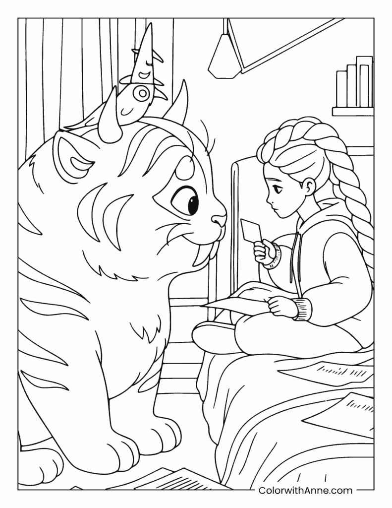
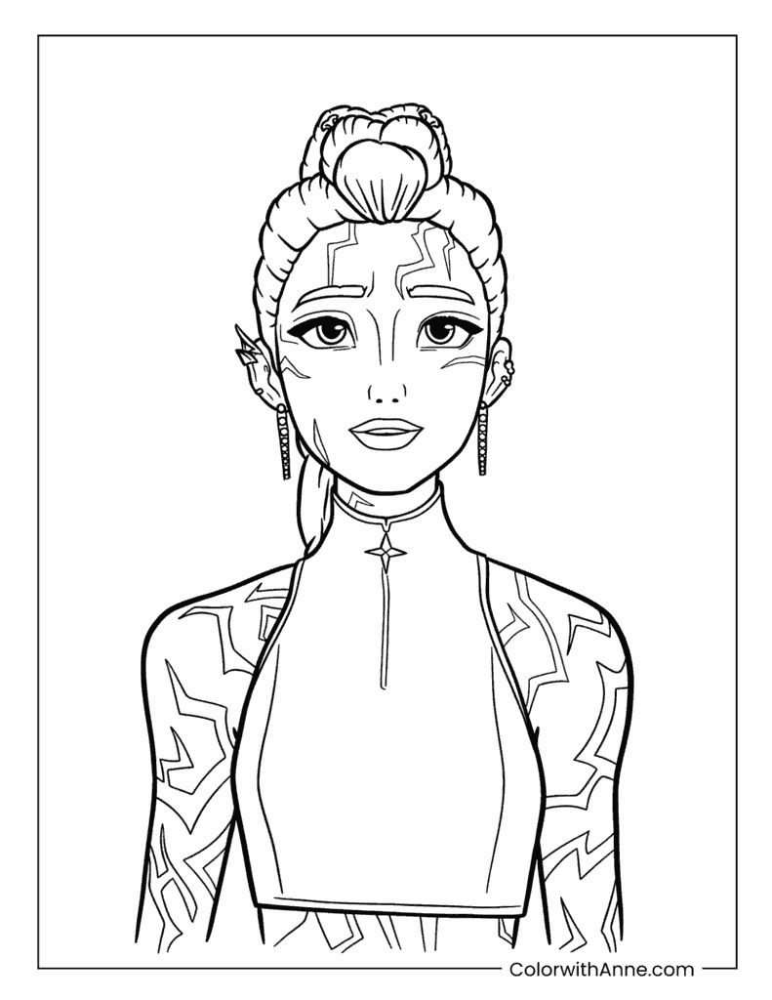
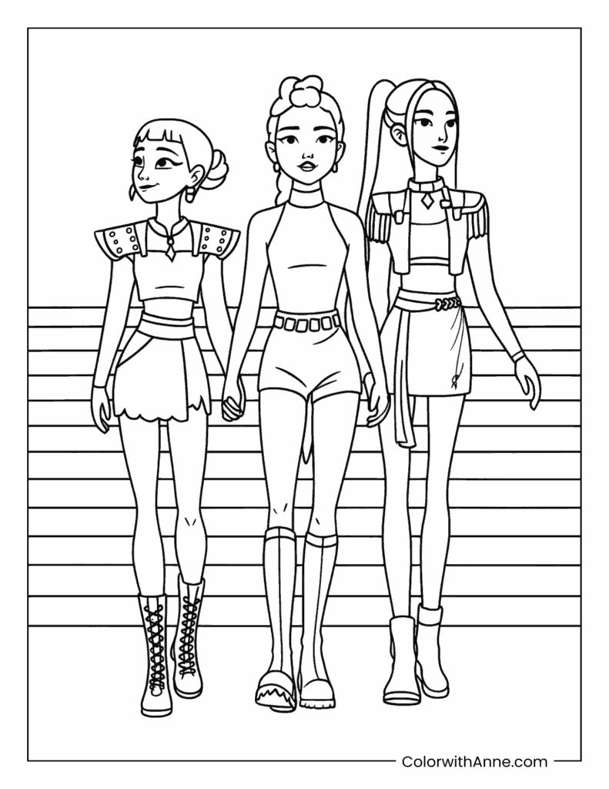
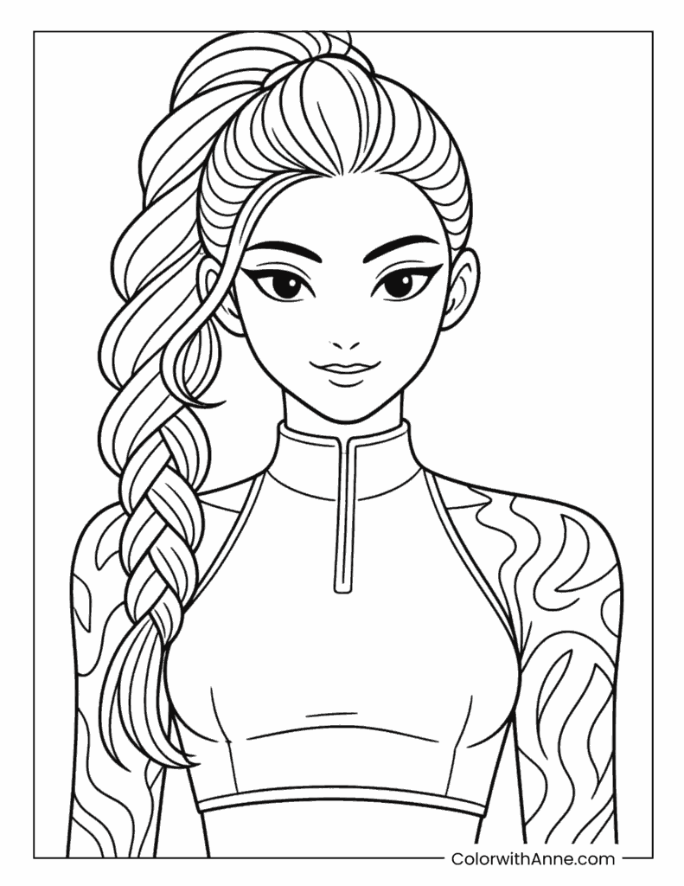

Rumi Confident with Sparkling Stars
A confident close-up portrait with sparkling stars and Rumi's signature jacket details.
The official preview catalog
Color with Anne helps children, parents, and teachers discover themed coloring activities for home, classrooms, parties, and quiet creative time. Explore recent additions and selected previews here, then print from the official website.
About the website
Color with Anne brings together animal, holiday, popular-interest, and everyday coloring themes with clear previews and straightforward access to printable pages.
The maintained website is the authoritative source for downloads, usage guidance, and the newest collections. This repository provides a smaller, structured window into that work.
Recently added
Updated . These text links lead to the newest topic pages on the official website.
Images and printable files for these recent additions remain on Color with Anne and are not copied into this repository.
Featured preview collection
Each preview shows the full composition. The official topic page is the single source for high-quality A4 and US Letter downloads.

A confident close-up portrait with sparkling stars and Rumi's signature jacket details.

A cheerful peace-sign pose with hearts and sparkles, and big open spaces for bright colors.

A heroic portrait with dramatic radiating lines behind Rumi's long braid.

A dreamy full-body scene with moons, stars, and flowing ribbons around Rumi's stage look.

A playful chibi scene: Rumi pops out of a giant ramen cup for a noodle break.

An intimate close-up of Rumi and Jinu with soft floating bubbles.

A cozy bedroom moment as Rumi shares cards with Derpy the tiger.

A striking portrait highlighting Rumi's glowing demon markings.

The full HUNTR/X lineup — Rumi, Mira, and Zoey — ready for the stage.

A simple, beginner-friendly portrait with Rumi's signature braid.
Made to be understood
The repository includes a machine-readable catalog describing each scene's subject, difficulty, preview path, alt text, official source, and license. This makes the collection understandable without turning GitHub into a duplicate download site.
View the JSON catalogWeb-sized previews load quickly and show the full composition. The print-quality PDFs remain on Color with Anne, where updates and licensing information have one authoritative home.
Continue exploring
This repository will grow one reviewed, original theme at a time. The maintained website has more printable activities for home and classroom use.